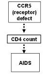
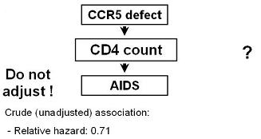
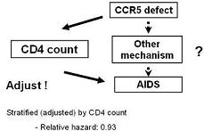

Lead Author(s): Jeff Martin, MD
CCR5 Receptor on the CD4 Cells
Taylor published findings on the human cellular receptor for HIV, the CCR5 receptor on CD4 cells.
- Shortly after its discovery, genetic defects in CCR5 were described and there was immediate interest in whether persons who have genetic defects in this receptor have slower disease progression to AIDS.
We know that CD4 count is a potent predictor of time-to-AIDS.
How should CD4 count be handled in assessing the association between CCR5 defect status and progression in HIV disease to AIDS?

Assessing Role of CCR5 - What Is Your Research Question?
To determine if CD4 count is an intermediary variable we ask:
- Is CCR5 associated with progression to AIDS, irrespective of mechanism?
To determine if CD4 count is a confounding variable we ask:
- Is CCR5 asssocated with progression to AIDS, independent of CD4 count?
If your research question was: Is CCR5 associated with progression to AIDS, irrespective of mechanism?

We are asking the question as to whether CCR5 defect status is associated with time to AIDS.
- We are hypothesizing that if it is, it is operating via changes in CD4 count as the mechanism, or intermediary variable.
IN THIS CASE, DO NOT ADJUST OR CONTROL FOR CD4 COUNT
- If you did you might not see any effect of CCR5 defect status.
When CD4 count was treated as an intermediary variable and not adjusted for, an association was seen.
- Having a CCR5 defect was seen to be protective against the development of AIDS, relative hazard 0.71
Confounding Variable: Adjusting to Answer Your Research Question
If your research question is: Is CCR5 asssocated with progression to AIDS, *independent of CD4 count*?

You can see that if you had blithely adjusted for the CD4 count first,
- you would not have seen an effect of CCR5.
Hence, you need always need to keep in mind exactly what the research question is and whether or not adjustment is needed to answer it.
Reference
Taylor, J. M., Wang, Y., Ahdieh, L., Chmiel, J. S., Detels, R., Giorgi, J. V., et al. (2000). Causal pathways for CCR5 genotype and HIV progression. J Acquir Immune Defic Syndr, 23(2), 160-171.